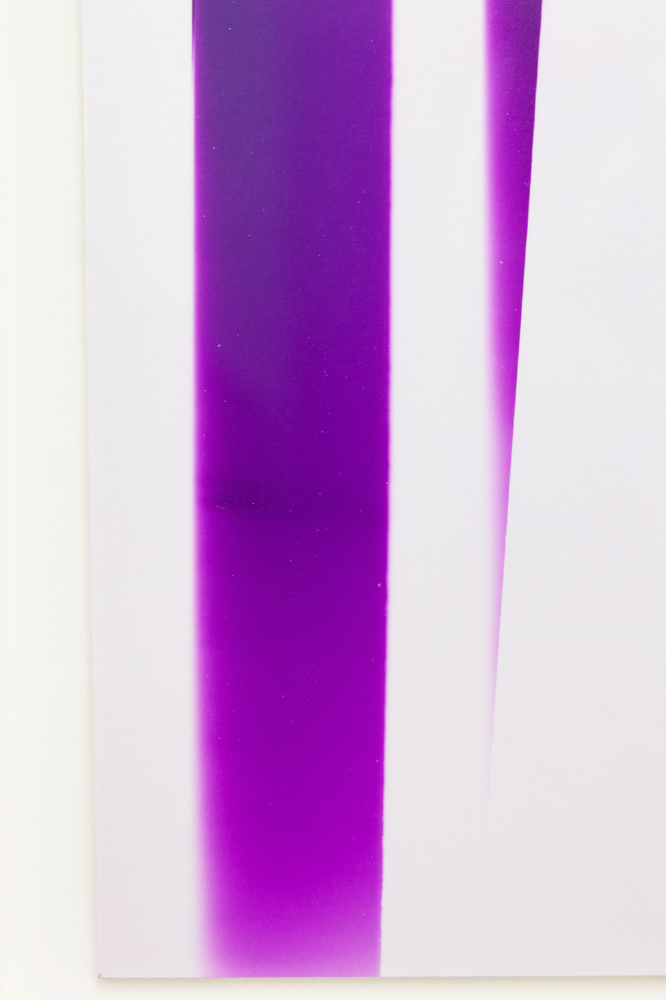
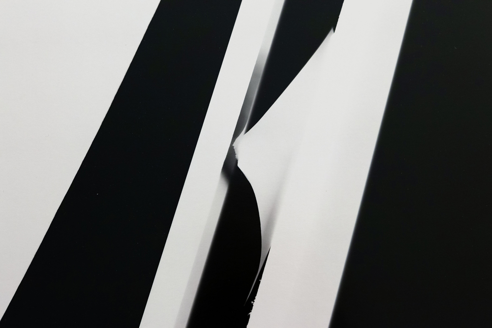
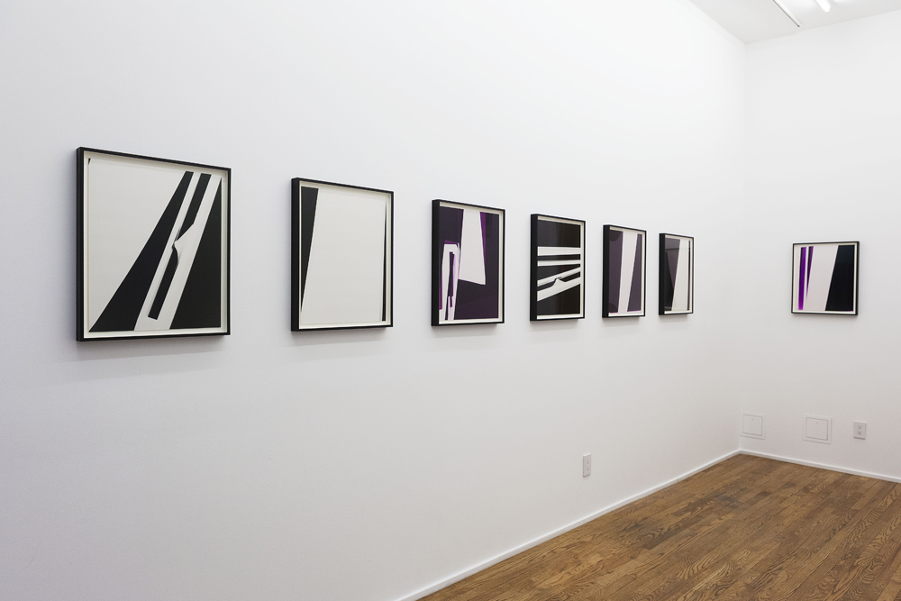
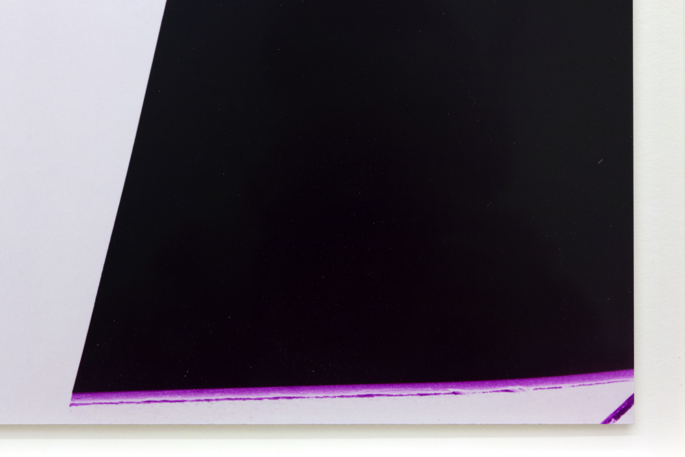
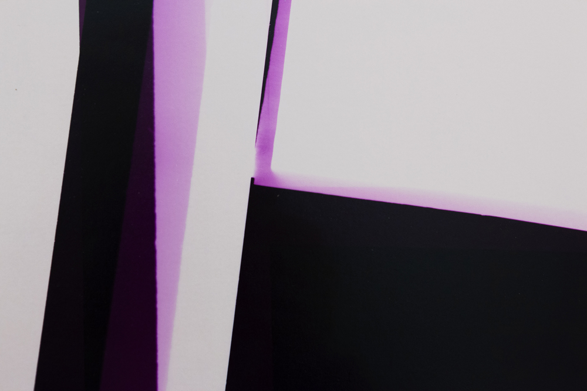
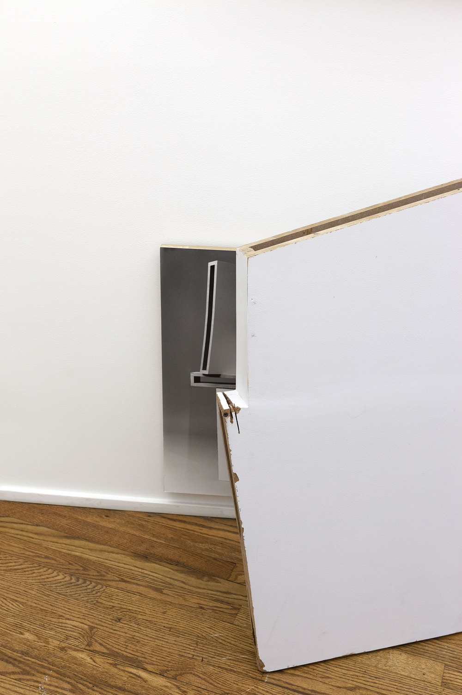
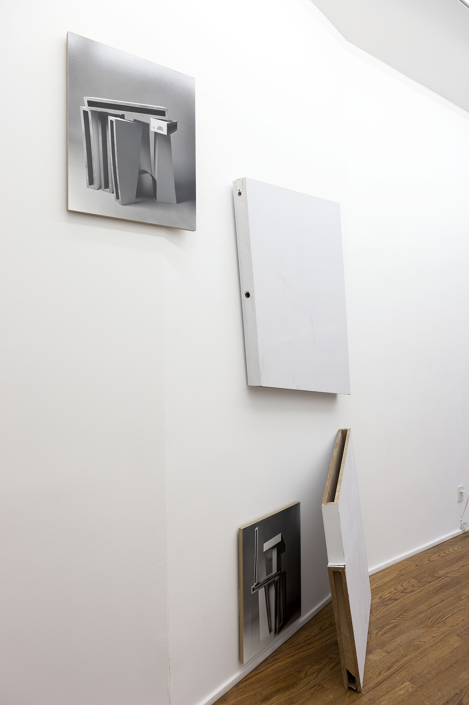
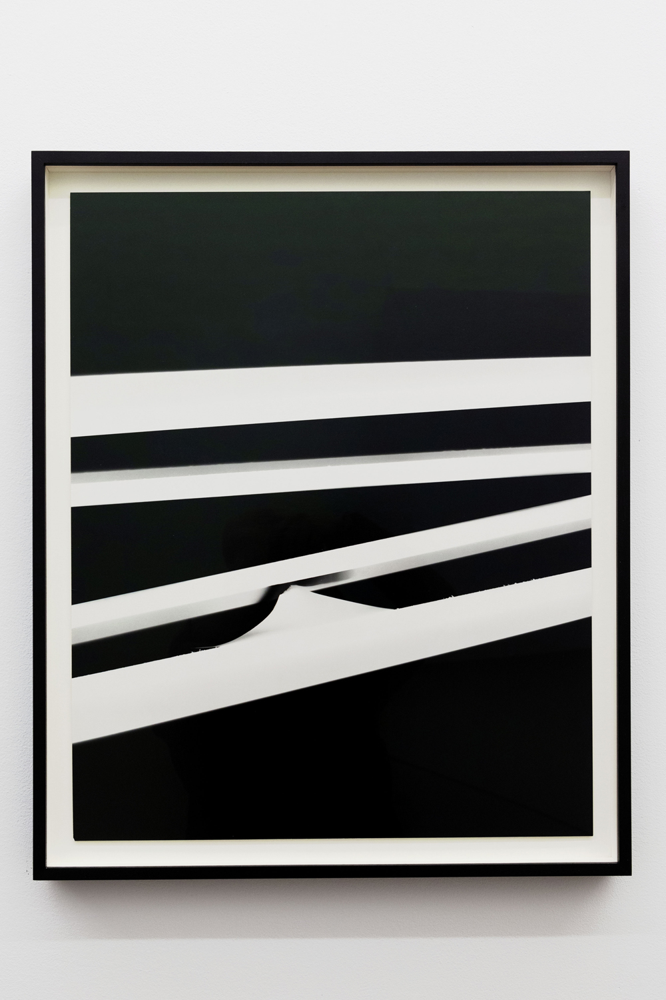
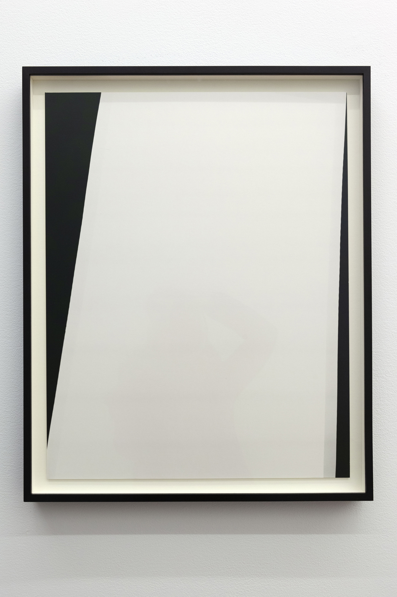
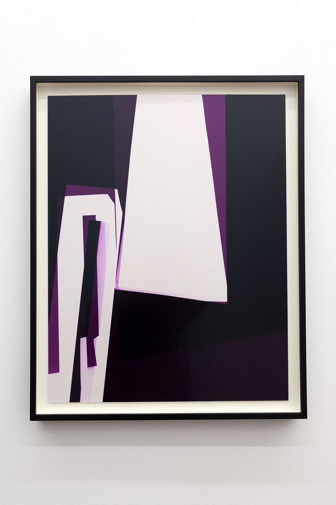

Text from Ulterior Gallery, 2019:
[...]decrease is a room based on one corner of another room. In a previous work, Bestard made an eight-foot sculpture based on a photograph of a corner of her apartment. Each piece in decrease is made using that same sculpture. Bestard decided to cut this wall-like sculpture into smaller, more manageable pieces, with the intention to create something new and thus reincarnate the form once more. This deconstruction and reconstruction became the core idea of decrease.
The artist writes: "What if the only way to care for the world is to decrease? To produce less, to consume less, to take less and leave less behind. To reconsider what we really need and create another system of values."
decrease, then, is about the potential for transformation and change. The show includes seven photograms created by arranging the sculpture pieces directly onto photo paper in an analog darkroom, both in color and in black and white. These photographic images reveal fragments of the myriad forms of the original sculpture. In some images the pieces almost touch, and in others they reveal their empty interior, which allows the light through. Exceeding the frame of the photographs, showing an irregular cut, the pieces sometimes suggest a bodily quality or some other kind of physical character. Having been deconstructed and reconstituted through stages, the original architectural element gains an unexpected and multifaceted presence. In other photographic works, System #1 and System #2, Bestard uses the same sculptural parts as props to creates a stage set. A formal representation of relationships and dependencies between the parts now constructs the images. Printed using the traditional gelatin silver print process, these photographs are exhibited with dissected parts of the sculpture.
decrease reflects the whole and fragments, the need to reorganize and reconstruct, and the role of reduction in the use of materials and artistic process. The nature of the photographic image enforces limits and boundaries to the realization of materiality. Created using previously disregarded or cast-off materials, including expired paper, the works on view in decrease embody the contradiction of thinking about decreasing while still producing something new.
Documentation by Ilaria Ortensi









